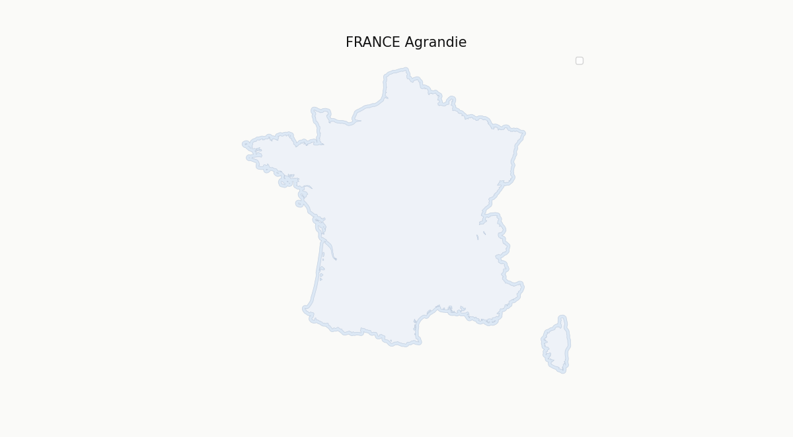
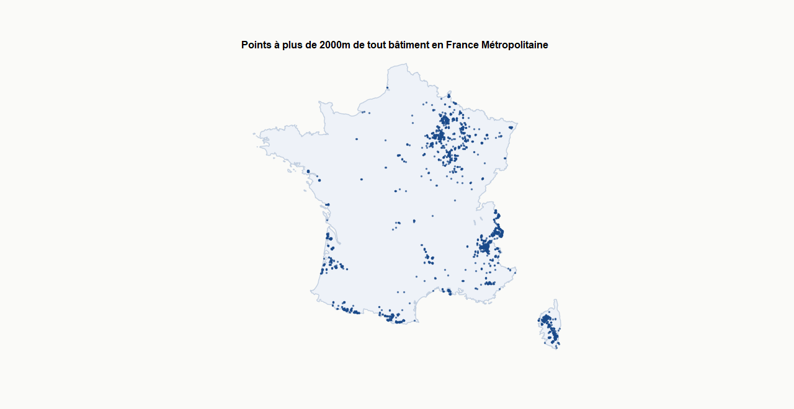
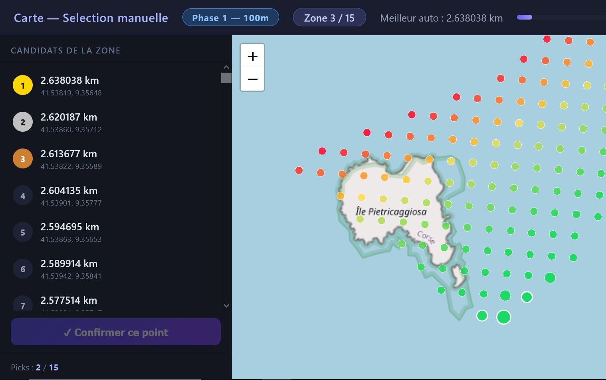
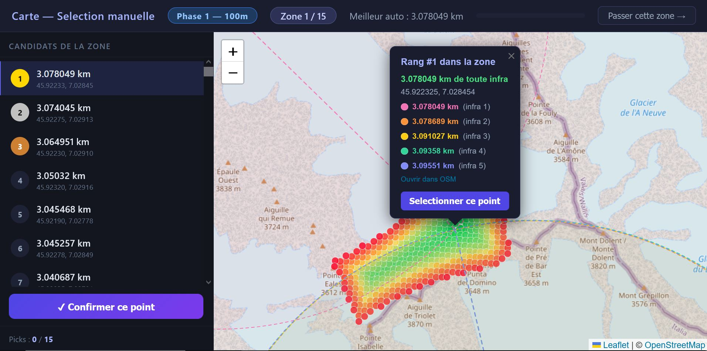

Sur ce micro site, je propose de trouver le point de France métropolitaine le plus éloigné d'infrastructures. J'ai travaillé sur deux cartes. La première recense le top 30 des points les plus éloignés de toute trace humaine recensée : qu'il s'agisse d'un chemin, d'une croix sur un sommet ou même d'une borne géodésique. La seconde est plus permissive, c'est un top 30 des points les plus éloignés de tout bâtiment, quel qu'en soit sa taille ou son type (cabane, refuge...). Tant que ce n'est pas une ruine, ça compte !
La méthode repose sur les données d'OpenStreetMap (merci à eux), et sur un fond de carte de la France métropolitaine (j'ai choisi celui de l'ADEME, car il exclut l'estuaire de la Gironde). J'ai par la suite écrit un script permettant l'extraction et le traitement de ces données. Dernière mise à jour en mai 2026. Ci-dessous, la méthodologie utilisée.
Trouver "l'endroit le plus isolé de France" est en fait un sujet compliqué et je n'en ai pas trouvé la réponse sur internet. Il faut en effet distinguer le village le plus isolé (le plus loin d'une route), le point le plus éloigné de toute habitation, le point le plus éloigné de toute structure, etc. Tout dépend de la définition de l'objet recherché (un point, une vallée, une zone ?) et des éléments que l'on souhaite éviter (routes carrossables, habitations, etc.). Je vous propose ici la méthodologie que j'ai appliqué pour trouver le point le plus éloigné de toute infrastructure artificielle. La méthodologie pour les bâtiments et la seconde carte est analogue.
La première étape consiste à effectuer un agrandissement artificiel de la France. On ajoute 10 km aux frontières car, si l'on ne compte pas les infrastructures des pays limitrophes, on risque de générer de « faux » points isolés à la frontière suisse, par exemple, simplement parce que le chemin le plus proche est de l'autre côté de la ligne de démarcation.

Ensuite, on cherche des zones candidates, dites « de silence », à partir des bâtiments. On extrait donc des données OSM tous les bâtiments de France métropolitaine (près de 50 millions, tout de même !), et on fonctionne par contamination. Je prends un bâtiment au hasard, qui va contaminer tous les autres bâtiments dans un rayon de 2km autour de lui. On répète jusqu'à ce que tous les bâtiments soient contaminés. On regarde les zones non-contaminées par ces cercles. Par effet de bord, certains points de ces zones peuvent quand même être à moins de 2km d'un batiment. Mais ce dont on est sûr, c'est que s'il existe un point à plus de 2km d'un batiment, alors il sera dans ces zones ! De même, si un point est à plus de 2km d'une infrastructure, alors il est à plus de 2km d'un batiment, donc ce point se situe aussi dans ces zones... Avant, on avait des millions de km² à analyser. Après cette opération, il n'en reste que quelques milliers ! Attention, en fin de calcul, il faudra disqualifier toutes les distances inférieures à 2km.

Une fois ces zones identifiées, on les agrandit encore de 2 km pour éviter les effets de bord, puis on extrait toutes les données d'infrastructure d'OpenStreetMap dans ces périmètres. On récupère les infrastructures ponctuelles et on « mappe » toutes les infrastructures linéaires (routes, chemins) par une série de points.
Cette approche permet de limiter considérablement le volume de données à traiter : puisque nous sommes dans des zones de silence, il y a logiquement peu d'infrastructures. Malgré tout, on récupère plusieurs dizaines de millions de points.
On procède alors à la construction d'une maille grossière en quadrillant nos zones de silence avec un point tous les 50 m. Nous avons alors deux bases de données : les points « candidats » et les points « infrastructures ».
À l'aide d'un algorithme de type KD-Tree, on calcule pour chaque candidat l'infrastructure la plus proche. Grâce à notre présélection, le calcul s'exécute en quelques dizaines de secondes sur un ordinateur classique. On obtient alors, pour chaque point du maillage, sa distance à la trace humaine la plus proche. Logiquement, les meilleurs résultats se regroupent par zones géographiques : si un point est à 10 km d'une route, son voisin à 50m le sera presque tout autant.
Le fond de carte national peut montrer ses limites (imprécisions sur les côtes ou les îles). Pour pallier cela, je sélectionne les 15 zones les plus prometteuses pour une vérification manuelle. Un module dédié affiche la carte OSM et permet de valider visuellement que le point est bien sur la terre ferme.

Une fois la zone validée, on augmente la précision du maillage à 1 mètre pour obtenir la coordonnée exacte. Une fois le point choisi, on disqualifie tous les autres points de la zone. Cela évite que le top soit tout au même endroit ! C'est un choix arbitraire. Nous obtenons ainsi la liste des 15 points les plus isolés de France métropolitaine. Cette méthode m'a également permis de décliner des classements des points les plus isolés des bâtiments. Voir la page correspondante.

Certains résultats sont surprenants, d'autres moins, mais l'ensemble produit des cartes intéressantes. Cela souligne surtout l'omniprésence humaine dans notre pays.
Ces lieux sont évidemment fragiles. Merci de ne pas vous y rendre.
Algorithme et site web imaginé et mis en place par Jean. Si cela intéresse, je publierai aussi le code du calcul. Les cartes sont générées à partir des données OpenStreetMap. La visualisation utilise Leaflet.js. Le fond de carte est celui de l' ADEME pour la métropole. Le site utilise GoatCounter pour compter les visites. Le site est hébergé sur GitHub.